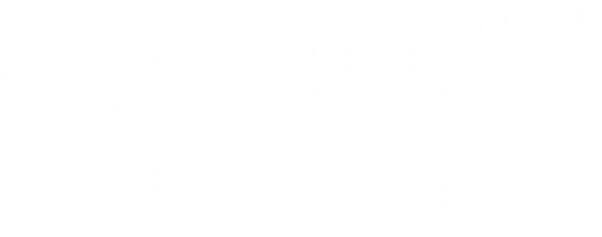
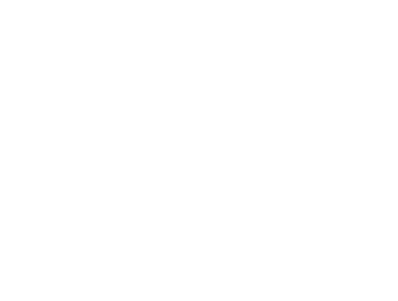

H
i
s
t
o
r
y
O
f
Artificial
Inteligence
Sejarah Kecerdasan Buatan (AI) dimulai pada 1950-an.
Jenis-Jenis
AI
AI ini menggunakan aturan dan logika yang telah diprogram
sebelumnya untuk mengambil keputusan. Mereka cocok untuk
tugas-tugas yang memiliki struktur yang terstruktur dengan
aturan yang jelas.
Rule-Based Systems (Sistem Berbasis Aturan)
Speech Recognition AI (Pengenalan Suara)
AI ini mengenali dan menerjemahkan ucapan manusia menjadi
teks atau perintah suara. Contohnya adalah asisten virtual
seperti Siri atau Google Assistant.
Natural Language Processing (Pemrosesan Bahasa Alami -
NLP)
AI ini berfokus pada pemahaman dan pengolahan bahasa
manusia. Ini digunakan dalam chatbot, penerjemah otomatis,
dan analisis sentimen.
Computer Vision AI (Visi Komputer)
AI ini mengenali dan menganalisis gambar dan video.
Digunakan dalam pengenalan wajah, identifikasi objek, dan
analisis visual.
Image Processing AI (Pemrosesan Citra)
AI ini digunakan untuk memproses dan memanipulasi gambar
digital, termasuk filtering gambar, perbaikan kualitas
gambar, dan segmentasi gambar.
Handwriting Recognition AI (Pengenalan Tulisan Tangan)
AI ini mengenali dan mengonversi tulisan tangan manusia menjadi teks yang dapat dibaca oleh komputer.
Recommendation Systems (Sistem Rekomendasi)
AI ini digunakan untuk menganalisis data pengguna dan
memberikan rekomendasi berdasarkan preferensi mereka,
seperti yang digunakan oleh Netflix atau Amazon.
Machine Learning (Pembelajaran Mesin)
Ini adalah pendekatan yang melibatkan penggunaan algoritma
untuk "mempelajari" dari data. Ini mencakup berbagai jenis
pembelajaran mesin, seperti pembelajaran mendalam (deep
learning) dan pembelajaran terawasi.
Security AI (Sistem Keamanan)
AI digunakan dalam deteksi ancaman siber dan analisis log
untuk melindungi sistem komputer dan jaringan.
Big Data Processing AI (Pengolahan Data Besar)
AI ini digunakan untuk mengelola, menganalisis, dan mengekstraksi informasi dari volume data besar dengan cepat dan efisien.
Pattern Recognition AI (Pengenalan Pola)
AI ini digunakan untuk mengidentifikasi pola dalam data,
seperti dalam pengenalan pola medis untuk diagnosis atau
dalam prediksi tren pasar.

